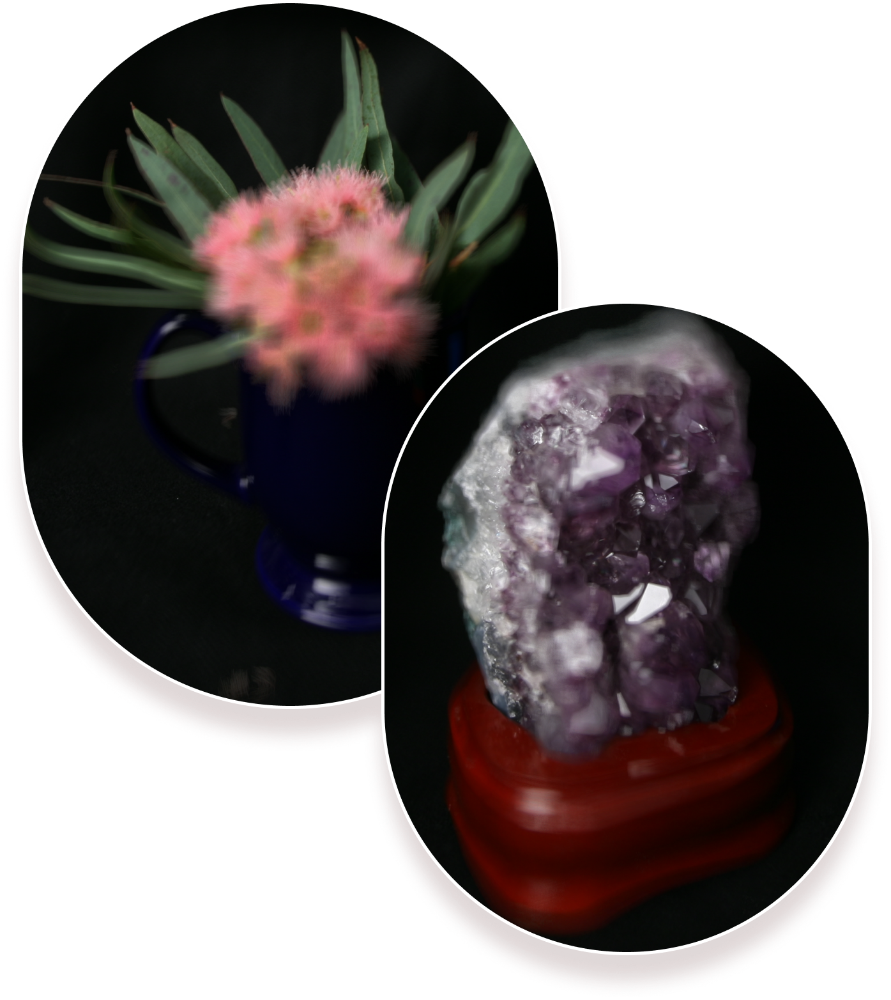

Depth Refocusing
A regular 2D photograph captures the amount of light that runs into each pixel on an image plane, while 4D light field is the amount of light traveling along each ray that runs into the image plan. This means that lihtfield camera is able to capture both the direction of the light values and the light values themselves. In the paper by Ng. et al., we can use this information to enable countless post-processing effects such as refocusing and aperture resizing. As a result, having light field data is useful for photographers as well as production cast as they are in a much more control of motion blur and depth of field for the scene. In this project I worked with both Stanford Lightfield Archive and MIT Synthetic Archive datasets in order to simulate some of the effects of light field cameras. This part covers depth of field manipulation.
A beautiful concept and the main assumption we make here is that far-away objects from the moving camera differ less in position than closer objects. To make sure this assumption works we can average original images. We will see that closer objects will be blurry because of the differences in position rather the background that is much sharper (image on the right). The objects which are far away from the camera do not vary their position significantly when the camera moves around while keeping the optical axis direction unchanged. The nearby objects, on the other hand, vary their position significantly across images. Averaging all the images in the grid without any shifting will produce an image which is sharp around the far-away objects but blurry around the nearby ones. Similarly, shifting the images 'appropriately' and then averaging allows one to focus on object at different depths. From this simple concept, we can derive how to create depth refocusing: by shifting images before they get averaged to match them better at certain depths in the scene, reducing the differences in position and defocusing other areas.
Algorithm
Image Integration. Each image collection from the dataset represents a set of sub-aperture images that are taken over 17x17 grid (in total there are 289 images). This means that light comes through different parts of the same aperture, or we can assume the image was taken with slight different positions. It turns out that each (x,y) position on the image plane corresponds to each (u,v) position on the aperture plane, which defines a unique ray. This means that we can represent such images through a set of light rays: every single pixel in the image plane is a combination of unique light rays. In Stanford's dataset the (u.v) position were already given in the filename of images. In this case, we would have to add and average all the light rays.
Refocusing. In order to create the effect of depth of field (refocusing on different parts of the image) we would have to choose the image reference (center) to estimate shift differences: calculating (u,v) offset between each sub-aperture image and the center image. To make the depth refocusing we would have to multiple the offset (u,v) by scalar c and shift each image by that result. The last part of the algorithm is to add and average those images together (image integration).
Details. The choice of scalar would define what parts of image we would want to focus on. The range I chose is from [-5,5]. As you will see in the interactive gallery, scalar=-5 and scalar=5 will produce the blurriest images, while small positive scalars (c=0.25, 0.5, 0.75) would focus more on the frontal objects, while small negative scalars (c=-0.25) will be more focused on the background.
scalar = -5
scalar = -0.5
scalar = 0
scalar = 2
Interactive Gallery
The range of all sliders is [-5,5] with the interval of 0.25. So, the sequence of scalars would be: -5, -4.75, -4.5, -4.25, -4, ...., 0, ...., 5. It is interesting to observe how depth of field here simulates similar effect as in regular cameras, where bluriness (blur circle is greater than pixel size) can be observed if the image is formed behind the image plane or in front of it, so the focus area is in between of those ranges. I made this interactive slider for bells & whistles.
Stanford Lightfield Archive
MIT Synthetic Archive
Learnings
I really liked working on this project. It was cool to simulate different effects of lightfield cameras and get to learn what are the practical applications of such technqiues. Some of useful resources that I found cool along the process: